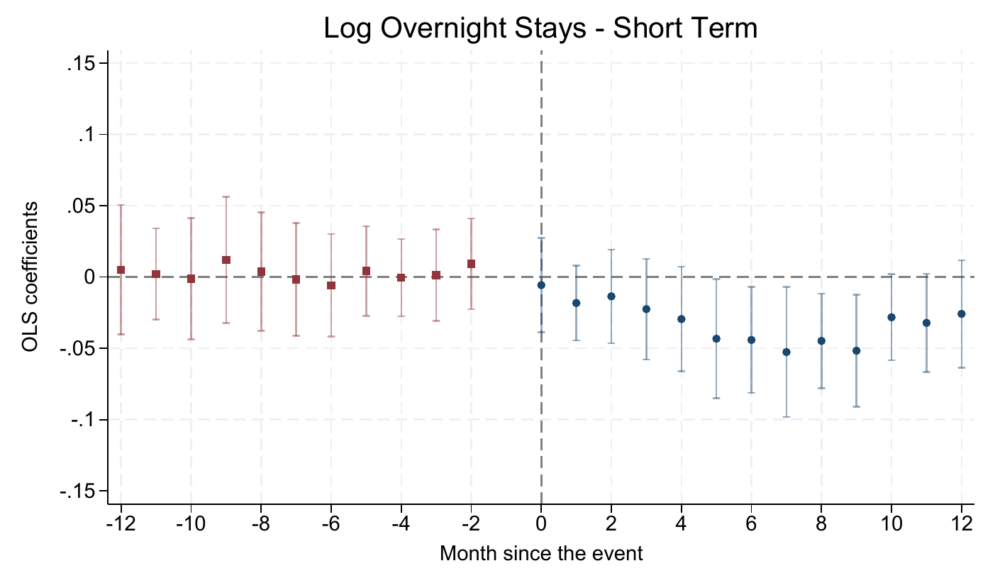

Taxing Travelers
Draft available soon
Abstract
Tourism is a key income source for cities while also exerting negative externalities on local economies. We estimate the causal effects of local tourism taxes on tourism demand and hotel prices using municipal-level data from Germany. Exploiting staggered tax adoptions across more than 700 municipalities between 2005 and 2023, we implement event-study designs based on monthly administrative data on overnight stays and accommodation supply. We complement this analysis with newly web-scraped hotel price data from Booking.com to study tax pass-through and analyze housing market implications of the tax. Tourism taxes reduce overnight stays by about 3.5 percent in the first year after adoption which corresponds to a tax elasticity of -0.7. There are strong heterogeneities. In popular places (big cities, fiscally successful cities, touristic cities) the elasticities are negligible. Hotel prices increase by roughly 3.3 percent, implying a substantial average pass-through rate of 0.66 to consumers. Pass-through is complete in the high-price hotel segment but close to zero in the low-price segment. We do not find evidence for effects on housing markets.
